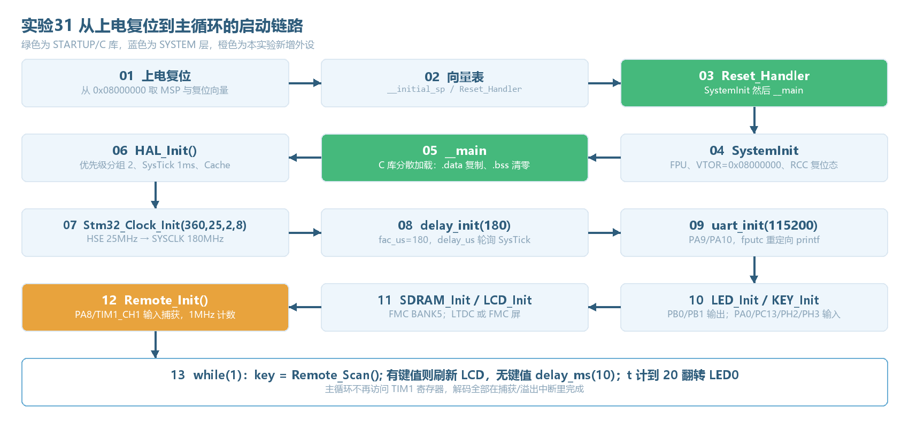
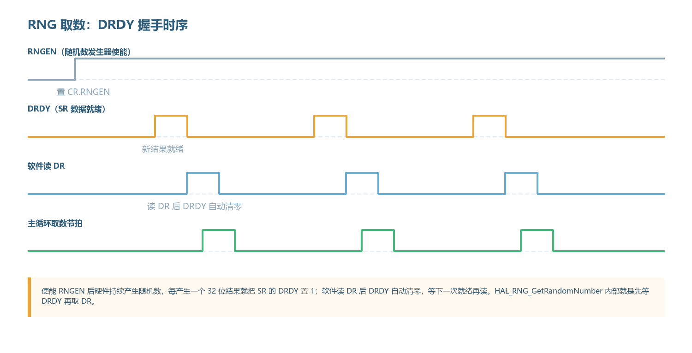
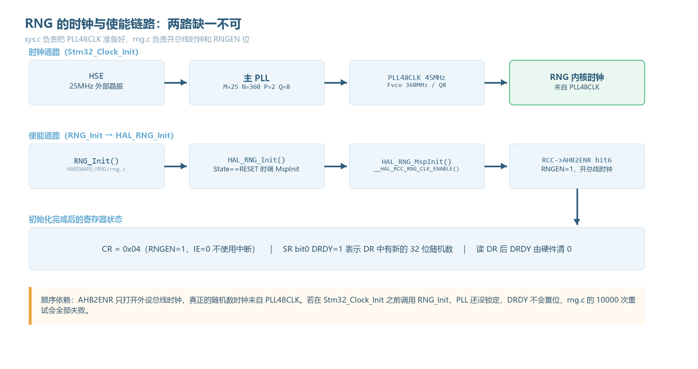
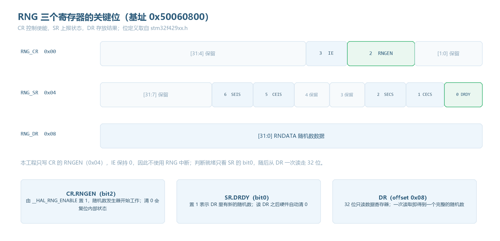
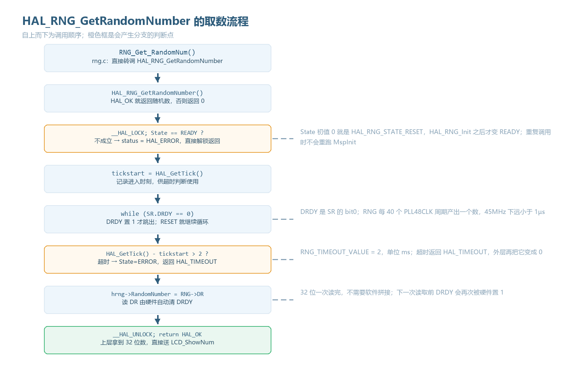

01 实验目标与硬件资源
工程名 RNG.uvprojx，入口 USER/main.c。整份代码只有一条主线：
先让芯片跑在 180MHz，再打开 RNG 的总线时钟和使能位，然后主循环里靠按键和软件节拍各取一次数，
结果全部用 LCD_ShowNum 显示到屏幕上。没有中断、没有 DMA，随机数的获取完全是轮询。
| 资源 | 连接 / 参数 | 源码位置 |
|---|---|---|
| DS0 指示灯 | PB1 推挽输出，初始化时置高（灭） | HARDWARE/LED/led.c → LED_Init() |
| KEY0 | PH3 上拉输入，按下为低电平 | HARDWARE/KEY/key.c → KEY_Scan() |
| 串口 1 | PA9 / PA10，115200-8-N-1，用于 printf | SYSTEM/usart/usart.c → uart_init() |
| RNG | 挂在 AHB2，基址 0x50060800，内核时钟 PLL48CLK = 45MHz | HARDWARE/RNG/rng.c |
| LCD | RGB 屏由 LTDC 驱动，帧缓存放在外部 SDRAM | HARDWARE/LCD/lcd.c、ltdc.c |
| SDRAM | FMC 外扩，给 LTDC 提供显存 | HARDWARE/SDRAM/sdram.c |
CR 的 RNGEN（bit2），IE（bit3）保持 0；
USER/stm32f4xx_it.c 里也只有 SysTick_Handler 与几个故障处理，看不到 RNG_IRQHandler。02 目录与文件分工
工程沿用正点原子的六目录结构。真正参与编译的文件可以在 USER/RNG.uvprojx 的
<FilePath> 列表里逐个核对，下表只列与本实验相关的部分。
| 目录 | 关键文件 | 在启动链中的角色 |
|---|---|---|
| CORE | startup_stm32f429xx.s | 向量表、Reset_Handler、栈 0x400 / 堆 0x200 |
| USER | main.c、stm32f4xx_it.c、system_stm32f4xx.c、stm32f4xx_hal_conf.h | 应用入口、中断实现、SystemInit 与 SystemCoreClock、HSE_VALUE 与模块开关 |
| SYSTEM | sys.c、delay.c、usart.c | 180MHz 时钟、SysTick 微秒级延时、printf 重定向 |
| HARDWARE | led.c、key.c、lcd.c、ltdc.c、sdram.c、rng.c | 板级外设，以及本次实验新增的 RNG 驱动 |
| HALLIB | stm32f4xx_hal.c、stm32f4xx_hal_rng.c 等 | HAL_Init、HAL_RNG_Init 等库函数实现，只读不改 |
HARDWARE/RTC目录里确实有rtc.c，但RNG.uvprojx的源文件列表中没有它——本实验不参与编译，看目录就下结论会判断错。- RNG 相关的三个文件缺一不可：
rng.c（业务封装）、stm32f4xx_hal_rng.c（库实现）、stm32f4xx_hal_conf.h里的HAL_RNG_MODULE_ENABLED（第 77 行）。 - 时钟相关的代码分散在
sys.c（切 PLL）和system_stm32f4xx.c（复位时的默认时钟）两处，读启动流程必须两边对照。
03 启动流程总览


使能 RNGEN 后硬件持续产生随机数，每得出一个 32 位结果就把 SR 的 DRDY 置 1；软件读 DR 后 DRDY 自动清零，等下一次就绪再读。取数函数必须先等 DRDY，否则读到的是上一次的旧值。
main 里的初始化顺序不是随便排的，每一行都在为下一行准备前提。下面是 USER/main.c 的完整正文，
只加了中文注释，没有删改任何语句（末尾的 while(1) 在 12 节展开）。
int main(void) // 程序入口，复位后由 __main 调用 { u32 random; // 存放 32 位随机数 u8 t=0,key; // t：主循环节拍计数；key：按键扫描结果 HAL_Init(); // 建立 1ms 时基、开 Cache、设中断优先级分组 Stm32_Clock_Init(360,25,2,8); // 设置时钟,180Mhz（N=360, M=25, P=2, Q=8） delay_init(180); // 初始化延时函数，fac_us = 180 uart_init(115200); // 初始化USART，printf 依赖它 LED_Init(); // 初始化LED，PB0/PB1 置高（灭） KEY_Init(); // 初始化按键，KEY0 = PH3 SDRAM_Init(); // 初始化SDRAM，LCD 的显存在这里 LCD_Init(); // 初始化LCD，内部会 printf 打印 LCD ID POINT_COLOR=RED; // 设置后续 LCD 文字颜色为红色 LCD_ShowString(30,50,200,16,16,"Apollo STM32F4/F7"); // 显示开发板型号标题 LCD_ShowString(30,70,200,16,16,"RNG TEST"); // 显示实验名称 LCD_ShowString(30,90,200,16,16,"ATOM@ALIENTEK"); // 显示作者/厂商标识 LCD_ShowString(30,110,200,16,16,"2016/1/27"); // 显示日期 while(RNG_Init()) // 初始化随机数发生器，返回 1 表示失败 { LCD_ShowString(30,130,200,16,16," RNG Error! "); // 失败时在屏幕显示错误提示 delay_ms(200); // 错误提示停留 200ms LCD_ShowString(30,130,200,16,16,"RNG Trying..."); // 显示正在重试 } // 失败则循环重试，直到成功 LCD_ShowString(30,130,200,16,16,"RNG Ready! "); // 初始化成功，覆盖错误提示 LCD_ShowString(30,150,200,16,16,"KEY0:Get Random Num"); // 提示按键 KEY0 取随机数 LCD_ShowString(30,180,200,16,16,"Random Num:"); // 32 位随机数显示标签 LCD_ShowString(30,210,200,16,16,"Random Num[0-9]:"); // 0~9 随机数显示标签 while(1) // 主循环，程序永不退出 { // 省略：主循环内容见 12 节 } }
- HAL_Init 必须最先：它把 SysTick 配成 1ms 时基，后面的
delay_ms、delay_us，以及 HAL_RNG 内部的 2ms 超时判断，全都依赖HAL_GetTick()。 - Stm32_Clock_Init 必须在 RNG_Init 之前：RNG 的内核时钟来自 PLL48CLK，Q=8 时才是 45MHz；PLL 没起来，DRDY 永远不会置位。
- uart_init 必须在 LCD_Init 之前：LCD_Init 内部用 printf 打印 LCD ID，而 printf 的落地实现 fputc 直接写 USART1 寄存器，串口没初始化就什么都看不到。
- SDRAM_Init 必须在 LCD_Init 之前：RGB 屏的帧缓存放在片外 SDRAM，显存还没就绪就去刷屏只会花屏。
while(RNG_Init())是阻塞重试：RNG_Init 内部已经等了 10000 次 × 10µs ≈ 100ms，失败后主程序再 delay 200ms 重来，直到成功为止。
04 启动文件与向量表
| 符号 / 常量 | 值 | 作用 |
|---|---|---|
Stack_Size | 0x400（1KB） | 主栈容量，复位时栈顶地址装进 MSP |
Heap_Size | 0x200（512B） | 堆容量，供 malloc 使用 |
__initial_sp | 栈顶地址 | 向量表第 0 个字，复位后自动装入 MSP |
__Vectors | 0x08000000 | 向量表起始，第 1 个字是 Reset_Handler |
Reset_Handler | [WEAK] | 复位入口，先 SystemInit 再 __main |
; ---------- 栈与堆：容量在这里定死 ---------- Stack_Size EQU 0x400 ; 栈大小 = 0x400 = 1KB AREA STACK, NOINIT, READWRITE, ALIGN=3 ; 定义栈段：未初始化、可读写、8 字节对齐 Stack_Mem SPACE Stack_Size ; 分配 1KB 栈空间 __initial_sp ; 栈顶，向量表第 0 项 Heap_Size EQU 0x200 ; 堆大小 = 0x200 = 512B AREA HEAP, NOINIT, READWRITE, ALIGN=3 ; 定义堆段：未初始化、可读写、8 字节对齐 __heap_base ; 堆起始地址标签 Heap_Mem SPACE Heap_Size ; 分配 512B 堆空间 __heap_limit ; 堆结束地址标签 PRESERVE8 ; 保证栈 8 字节对齐（AAPCS 要求） THUMB ; 声明以下为 Thumb 指令集 ; ---------- 向量表首地址 ---------- AREA RESET, DATA, READONLY ; 定义复位向量表段：只读数据 EXPORT __Vectors ; 导出向量表符号供链接器使用 __Vectors DCD __initial_sp ; 第 0 项：栈顶 DCD Reset_Handler ; 第 1 项：复位入口 ; 省略：NMI、HardFault、SysTick、各外设 IRQ 的入口地址 ; ---------- 复位入口：只做两件事 ---------- Reset_Handler PROC ; 定义复位处理函数过程开始 EXPORT Reset_Handler [WEAK] ; 弱导出，允许用户重写 IMPORT SystemInit ; 引入外部符号 SystemInit（C 函数） IMPORT __main ; 引入 C 库入口 __main LDR R0, =SystemInit ; 把 SystemInit 地址加载到 R0 BLX R0 ; BLX：调用并返回 LDR R0, =__main ; 把 __main 地址加载到 R0 BX R0 ; BX：跳过去，不返回 ENDP ; 过程结束
- 复位时 Cortex-M4 从 0x08000000 取第 0 个字装 MSP、第 1 个字装 PC，所以向量表第 0 项必须是地址（__initial_sp），不能写成函数名。
BLX R0调用 SystemInit 后还会回来执行下一条；BX R0跳到 __main 就再也不回汇编了——这两种指令的差别就是“是否返回”。- 启动文件里看不到拷贝 .data、清零 .bss 的循环：这些工作由 __main 调用 C 库的分散加载代码完成，所以 __main 才是“C 世界”的真正起点。
- 栈只有 1KB：本工程调用层次浅（main → LCD_ShowNum → LCD_ShowChar），够用；但不要在中断里再放大数组。
05 SystemInit 与 HAL_Init
SystemInit：回到 HSI 16MHz
它由 Reset_Handler 调用，函数体里没有任何“配置 180MHz”的代码，做的全是复位值兜底。
void SystemInit(void) /* 系统初始化，由 Reset_Handler 调用，把时钟退回默认 */ { #if (__FPU_PRESENT == 1) && (__FPU_USED == 1) /* 仅当芯片带 FPU 且工程启用 FPU 时编译 */ SCB->CPACR |= ((3UL << 10*2)|(3UL << 11*2)); /* 开 CP10/CP11，让 FPU 可用 */ #endif /* 条件编译结束 */ RCC->CR |= (uint32_t)0x00000001; /* 打开 HSI */ RCC->CFGR = 0x00000000; /* 时钟源切回 HSI，各分频归 1 */ RCC->CR &= (uint32_t)0xFEF6FFFF; /* 关 HSEON、CSSON、PLLON */ RCC->PLLCFGR = 0x24003010; /* PLL 参数恢复默认 */ RCC->CR &= (uint32_t)0xFFFBFFFF; /* 清 HSEBYP */ RCC->CIR = 0x00000000; /* 关所有 RCC 中断 */ /* 省略：DATA_IN_ExtSRAM / DATA_IN_ExtSDRAM 均未在工程里定义， SystemInit_ExtMemCtl() 不会被调用，SDRAM 由 main 里的 SDRAM_Init() 负责 */ SCB->VTOR = FLASH_BASE | VECT_TAB_OFFSET; /* 向量表定位到 0x08000000 */ }
- 函数体内没有任何切 PLL 的语句，只是把 HSI 打开、HSE/PLL 关掉，让主频回到 16MHz 的复位默认值。
- FPU 的使能放在最前面且用
#if保护：如果工程没开 FPU，__FPU_USED为 0，这段不编译，避免写 CPACR 出问题。 SCB->VTOR把向量表重定位到FLASH_BASE（0x08000000），这样中断时 CPU 才会到 Flash 里取向量，而不是默认的 0x00000000。- 本工程未定义
DATA_IN_ExtSRAM/DATA_IN_ExtSDRAM，所以 SystemInit 不会碰外部存储器，SDRAM 完全留给 main 里的SDRAM_Init()。
HAL_Init：时基与分组
HAL_StatusTypeDef HAL_Init(void) /* HAL 库初始化入口，main 里第一个调用 */ { __HAL_FLASH_INSTRUCTION_CACHE_ENABLE(); /* I-Cache */ __HAL_FLASH_DATA_CACHE_ENABLE(); /* D-Cache */ __HAL_FLASH_PREFETCH_BUFFER_ENABLE(); /* 预取缓冲 */ HAL_NVIC_SetPriorityGrouping(NVIC_PRIORITYGROUP_2); /* 中断优先级分组 2 */ HAL_InitTick(TICK_INT_PRIORITY); /* TICK_INT_PRIORITY = 0x0F */ HAL_MspInit(); /* 本工程未重写，用库里的空实现 */ return HAL_OK; /* 返回初始化成功 */ } __weak HAL_StatusTypeDef HAL_InitTick(uint32_t TickPriority) /* 弱定义的时基初始化，可被用户重写 */ { HAL_SYSTICK_Config(HAL_RCC_GetHCLKFreq()/1000); /* 此刻是 HSI：16000000/1000 = 16000 */ HAL_NVIC_SetPriority(SysTick_IRQn, TickPriority ,0); /* SysTick 抢占优先级=TickPriority，子优先级=0 */ return HAL_OK; /* 返回成功 */ }
- SystemInit 跑完时主频是 HSI 16MHz，
SystemCoreClock的初值也是 16000000，所以 HAL_InitTick 算出的重装值是 16000。 - 之后
Stm32_Clock_Init调用HAL_RCC_ClockConfig，该函数末尾（stm32f4xx_hal_rcc.c第 813 行）会再调一次 HAL_InitTick，重装值变成 180000，1ms 时基依旧准确。 - 所以
delay_init(180)里不需要再动 SysTick 的 LOAD / CTRL，它只负责记录fac_us=180这个换算系数。 - 优先级分组被固定为 GROUP_2（2 位抢占 + 2 位子优先级），后面对 SysTick_IRQn 设的优先级 0x0F 都按这个分组解释。
06 时钟树：从 HSE 25MHz 到 180MHz
main 里的 Stm32_Clock_Init(360,25,2,8) 四个实参依次是 PLLN、PLLM、PLLP、PLLQ，
换算结果如下（sys.c 的注释里也逐条写明了）。
| 节点 | 计算 | 频率 | 供给谁 |
|---|---|---|---|
| HSE | 板载晶振，HSE_VALUE | 25MHz | PLL 输入 |
| PLL 输入 | 25 / PLLM(25) | 1MHz | VCO 参考 |
| VCO | 1 × PLLN(360) | 360MHz | PLL 输出源 |
| SYSCLK | 360 / PLLP(2) | 180MHz | 系统时钟 |
| HCLK | SYSCLK / 1 | 180MHz | CPU、AHB、SysTick |
| PCLK1 | HCLK / 4 | 45MHz | APB1 外设 |
| PCLK2 | HCLK / 2 | 90MHz | APB2 外设 |
| PLL48CLK | 360 / PLLQ(8) | 45MHz | USB / SDIO / RNG |
void Stm32_Clock_Init(u32 plln,u32 pllm,u32 pllp,u32 pllq) // 时钟初始化，四参对应 PLLN/M/P/Q { HAL_StatusTypeDef ret = HAL_OK; // 保存 HAL 返回值，用于错误检查 RCC_OscInitTypeDef RCC_OscInitStructure; // 振荡器配置结构体 RCC_ClkInitTypeDef RCC_ClkInitStructure; // 总线时钟配置结构体 __HAL_RCC_PWR_CLK_ENABLE(); // 使能PWR时钟，后面要调压 __HAL_PWR_VOLTAGESCALING_CONFIG(PWR_REGULATOR_VOLTAGE_SCALE1); // 电压级别1 RCC_OscInitStructure.OscillatorType=RCC_OSCILLATORTYPE_HSE; // 时钟源为HSE RCC_OscInitStructure.HSEState=RCC_HSE_ON; // 打开HSE RCC_OscInitStructure.PLL.PLLState=RCC_PLL_ON; // 打开PLL RCC_OscInitStructure.PLL.PLLSource=RCC_PLLSOURCE_HSE; // PLL 输入源选 HSE RCC_OscInitStructure.PLL.PLLM=pllm; // PLLM 分频系数 RCC_OscInitStructure.PLL.PLLN=plln; // PLLN 倍频系数 RCC_OscInitStructure.PLL.PLLP=pllp; // 系统时钟分频，只能是 2/4/6/8 RCC_OscInitStructure.PLL.PLLQ=pllq; // USB/SDIO/随机数产生器等的主PLL分频系数 ret=HAL_RCC_OscConfig(&RCC_OscInitStructure); // 配置振荡器（HSE + PLL） if(ret!=HAL_OK) while(1); // 配置失败则死循环停机 ret=HAL_PWREx_EnableOverDrive(); // 180MHz 属于 over-drive 档，必须先开 if(ret!=HAL_OK) while(1); // over-drive 失败则停机 RCC_ClkInitStructure.ClockType=(RCC_CLOCKTYPE_SYSCLK|RCC_CLOCKTYPE_HCLK|RCC_CLOCKTYPE_PCLK1|RCC_CLOCKTYPE_PCLK2); // 要配置 SYSCLK/HCLK/PCLK1/PCLK2 RCC_ClkInitStructure.SYSCLKSource=RCC_SYSCLKSOURCE_PLLCLK; // 系统时钟源选 PLL 输出 RCC_ClkInitStructure.AHBCLKDivider=RCC_SYSCLK_DIV1; // HCLK = 180MHz RCC_ClkInitStructure.APB1CLKDivider=RCC_HCLK_DIV4; // PCLK1 = 45MHz RCC_ClkInitStructure.APB2CLKDivider=RCC_HCLK_DIV2; // PCLK2 = 90MHz ret=HAL_RCC_ClockConfig(&RCC_ClkInitStructure,FLASH_LATENCY_5); // 同时设 Flash 5WS if(ret!=HAL_OK) while(1); // 时钟切换失败则停机 }
- RNG 并不在 APB1/APB2 上，它的内核时钟固定来自 PLL48CLK（PLLQ 这一路），所以 sys.c 里的一句注释就决定了 RNG 能不能工作。
- 切到 180MHz 之前必须先
HAL_PWREx_EnableOverDrive()，这是 F429 的高频档前提；失败就while(1)停住，不会继续往下跑。 - Flash 等待周期必须随频率抬高：这里用
FLASH_LATENCY_5（5WS，即 6 个 CPU 周期），少了会取指错乱。 - 每一处 HAL 调用都检查返回值并
while(1)，这是裸机常用的“失败即停”策略：调试时看程序停在哪一行就知道卡在哪一步。
07 延时与 printf：SysTick 与 fputc
delay_init / delay_us：轮询 SysTick 的递减计数器
SYSTEM/sys/sys.h 里 SYSTEM_SUPPORT_OS 定义为 0，所以编译的是
#else 之后的非 OS 版本。
void delay_init(u8 SYSCLK) // 延时初始化，传入系统时钟主频（MHz） { HAL_SYSTICK_CLKSourceConfig(SYSTICK_CLKSOURCE_HCLK); // SysTick 时钟源 = HCLK fac_us=SYSCLK; // 1µs 需要多少个 HCLK 节拍 // 省略：#if SYSTEM_SUPPORT_OS 分支里配置 reload / 开中断的代码，本工程不编译 } void delay_us(u32 nus) // 微秒级延时，nus 为要延时的微秒数 { u32 ticks; // 需要等待的总节拍数 u32 told,tnow,tcnt=0; // told：旧值；tnow：新值；tcnt：已累计节拍 u32 reload=SysTick->LOAD; // 当前重装值：180000 ticks=nus*fac_us; // 1µs → 180 个节拍 told=SysTick->VAL; // 刚进入时的计数器值 while(1) // 轮询等待循环 { tnow=SysTick->VAL; // 读取当前计数器值 if(tnow!=told) // 只有计数器变化才累加 { if(tnow<told)tcnt+=told-tnow; // 没有跨过重装点 else tcnt+=reload-tnow+told; // 计数器已经绕回一圈 told=tnow; // 更新旧值为当前值 if(tcnt>=ticks)break; // 达到目标节拍数则退出 } }; // 循环结束 } void delay_ms(u16 nms) // 毫秒级延时，nms 为要延时的毫秒数 { u32 i; // 循环计数变量 for(i=0;i<nms;i++) delay_us(1000); // 非 OS 版本：10ms = 10 次 1000µs }
- SysTick 是在
HAL_Init → HAL_InitTick → HAL_SYSTICK_Config(180000)时就配置好的，delay_init 只记录换算系数fac_us，不碰 LOAD/CTRL。 - SysTick 是递减计数器，所以
tnow < told与tnow > told要分别累加，后一种情况说明跨过了一次重装点。 delay_us靠轮询 VAL，不进中断，所以能在中断里用；但也意味着这段时间 CPU 是空转的。delay_ms(10)在非 OS 分支里是 10 次delay_us(1000)，这决定了主循环一轮至少 20ms（见 12 节）。
fputc：printf 落到 USART1 寄存器
#pragma import(__use_no_semihosting) // 禁止半主机模式 struct __FILE { int handle; }; // 定义 FILE 结构体，满足 stdio 依赖 FILE __stdout; // 标准输出文件句柄 void _sys_exit(int x) { x = x; } // 骗过链接器：不依赖调试器 int fputc(int ch, FILE *f) // printf 底层：输出一个字符到串口 { while((USART1->SR&0X40)==0); // 等 TXE（发送数据寄存器空） USART1->DR = (u8) ch; // 直接写数据寄存器 return ch; // 返回写入的字符 }
- fputc 只用
USART1->SR和USART1->DR两个寄存器，不走HAL_UART_Transmit，所以即使 UART 句柄状态不对，printf 也能出字。 #pragma import(__use_no_semihosting)与_sys_exit是为了避免半主机：没有它们，没接调试器时一次 printf 就会卡死在 BKPT。- 串口必须先
uart_init(115200)完成 GPIO/波特率配置，否则写 DR 也只是把数据丢进一个没工作的外设。
08 RNG 的时钟与总线使能

本工程并没有手写 RCC 寄存器，而是重写了 HAL 的弱函数 HAL_RNG_MspInit。
这个函数名在 stm32f4xx_hal_rng.c 里是 __weak 的，rng.c 里再定义一次就会覆盖库里的空实现。
void HAL_RNG_MspInit(RNG_HandleTypeDef *hrng) // RNG 底层初始化：只负责开总线时钟 { __HAL_RCC_RNG_CLK_ENABLE(); // 使能RNG时钟（真正展开见下） } /* 宏展开后的关键语句，取自 stm32f4xx_hal_rcc_ex.h */ #define __HAL_RCC_RNG_CLK_ENABLE() do { \ /* do-while(0) 保证宏作为单语句安全 */ __IO uint32_t tmpreg = 0x00; \ /* 临时变量，用于读回延时 */ SET_BIT(RCC->AHB2ENR, RCC_AHB2ENR_RNGEN); /* bit6 = 1 */ \ /* 使能后读回一次，起到几个周期的延时作用 */ \ tmpreg = READ_BIT(RCC->AHB2ENR, RCC_AHB2ENR_RNGEN); \ /* 读回刚置的位，确保时钟已生效 */ UNUSED(tmpreg); \ /* 消除未使用变量的编译警告 */ } while(0) /* 宏结束 */
| 层面 | 由谁负责 | 寄存器 / 信号 | 不做的后果 |
|---|---|---|---|
| 总线时钟 | HAL_RNG_MspInit | RCC->AHB2ENR bit6 RNGEN | 读写 RNG 寄存器全部无效（总线返回错误） |
| 内核时钟 | Stm32_Clock_Init | PLL48CLK = 45MHz | CR.RNGEN 置了也不出数，SR.DRDY 永远为 0 |
| 外设使能 | HAL_RNG_Init | RNG->CR bit2 RNGEN | 处于关闭态，DR 不更新 |
AHB2ENR只打开“外设总线的访问权限”，让 CPU 能读写 0x50060800 开始的那几个寄存器；它并不是随机数发生器的时钟源。- 随机数发生器的时钟来自 PLL48CLK。本工程 Q=8 得到 45MHz，是 48MHz 域内的合法频率。
- 正因如此，调用顺序不能反：如果先在 PLL 未锁定时调 RNG_Init，RNG 的时钟错误标志（SR.CECS）会上报，DRDY 不置位，rng.c 的 10000 次重试全部失败。
- MspInit 命名是 HAL 的约定，不是任意函数：名字写错就不会被调用，表现为“时钟没开、读寄存器全是 0”。
09 RNG 初始化与 CR.RNGEN

u8 RNG_Init(void) // RNG 初始化，返回 0 成功、1 失败 { u16 retry=0; // 等待 DRDY 的重试计数 RNG_Handler.Instance=RNG; // 绑定外设基址 0x50060800 HAL_RNG_Init(&RNG_Handler); // 初始化RNG：MspInit + 置 RNGEN while(__HAL_RNG_GET_FLAG(&RNG_Handler,RNG_FLAG_DRDY)==RESET&&retry<10000) { // 等第一个随机数就绪，最多 10000 次 retry++; // 重试计数加一 delay_us(10); // 每次 10µs，总计约 100ms } if(retry>=10000) return 1; // 随机数产生器工作不正常 return 0; // 初始化成功 }
HAL_RNG_Init只保证CR.RNGEN置位、时钟打开，但随机数发生器从使能到产出第一个数需要若干个 PLL48CLK 周期，所以必须单独轮询DRDY。- 10000 × 10µs ≈ 100ms 是软件兜底：正常硬件在几次循环内 DRDY 就会置位，几乎不等待；只有时钟没配好时才会走到超时。
- 返回值 1 直接被 main 里的
while(RNG_Init())用来触发重试，因此这里不需要打印或清状态——失败后整个初始化会从头再来。 - 由于
RNG_Handler.State在第一次HAL_RNG_Init后已变为 READY，重试时不会再开时钟，只会重新轮询 DRDY，开销很小。
库函数的实现（HALLIB/STM32F4xx_HAL_Driver/Src/stm32f4xx_hal_rng.c）只做三件事：必要时调 MspInit、置 RNGEN、改状态机。
HAL_StatusTypeDef HAL_RNG_Init(RNG_HandleTypeDef *hrng) /* HAL 库 RNG 初始化函数 */ { if(hrng == NULL) return HAL_ERROR; /* 空指针保护 */ __HAL_LOCK(hrng); /* 加锁，防止重入 */ if(hrng->State == HAL_RNG_STATE_RESET) /* 初值 0，第一次必然成立 */ { hrng->Lock = HAL_UNLOCKED; /* 先解锁，方便 MspInit 内部操作 */ HAL_RNG_MspInit(hrng); /* 用户重写的弱函数：开 AHB2 时钟 */ } /* 仅首次初始化执行 MspInit */ hrng->State = HAL_RNG_STATE_BUSY; /* 置为忙状态 */ __HAL_RNG_ENABLE(hrng); /* RNG->CR |= RNG_CR_RNGEN，即 bit2 */ hrng->State = HAL_RNG_STATE_READY; /* 置为就绪状态 */ __HAL_UNLOCK(hrng); /* 解锁 */ return HAL_OK; /* 返回成功 */ }
RNG_Handler是rng.c里的全局变量，上电清零后State = 0 = HAL_RNG_STATE_RESET，所以第一次调用一定进入 MspInit 分支。- 重复调用时 State 已是 READY，MspInit 不会再跑；靠这一点，
while(RNG_Init())里的重试不会反复开时钟。 HAL_RNG_Init的返回值在本工程里被忽略了：真正决定成败的是后面的 DRDY 轮询，因为 RNGEN 置位并不代表能出数。- 10000 × 10µs ≈ 100ms 是“硬件起不来”的兜底：正常情况第一个循环判断时 DRDY 就已经是 SET，几乎不等待。
10 等待 DRDY 与读取 DR

HAL_StatusTypeDef HAL_RNG_GenerateRandomNumber(RNG_HandleTypeDef *hrng, uint32_t *random32bit) // 生成一个 32 位随机数 { uint32_t tickstart = 0; // 记录起始时刻，用于超时判断 HAL_StatusTypeDef status = HAL_OK; // 默认返回成功 __HAL_LOCK(hrng); // 加锁防重入 if(hrng->State == HAL_RNG_STATE_READY) // 已初始化才允许取数 { hrng->State = HAL_RNG_STATE_BUSY; // 置为忙状态 tickstart = HAL_GetTick(); // 记录进入时刻（ms） while(__HAL_RNG_GET_FLAG(hrng, RNG_FLAG_DRDY) == RESET) // 等 SR 的 bit0 { if((HAL_GetTick() - tickstart ) > RNG_TIMEOUT_VALUE) // 宏值 2，单位 ms { hrng->State = HAL_RNG_STATE_ERROR; // 超时置错误态 __HAL_UNLOCK(hrng); // 解锁 return HAL_TIMEOUT; // 返回超时 } // 超时分支结束 } // 等待 DRDY 循环结束 hrng->RandomNumber = hrng->Instance->DR; // 读 DR，硬件自动清 DRDY *random32bit = hrng->RandomNumber; // 通过指针返回给调用者 hrng->State = HAL_RNG_STATE_READY; // 恢复就绪状态 } else { status = HAL_ERROR; // 状态不对：没初始化或上次超时 } __HAL_UNLOCK(hrng); // 解锁 return status; // 返回最终状态 }
RNG_TIMEOUT_VALUE在stm32f4xx_hal_rng.c里定义为 2，单位是 ms，判断依据是HAL_GetTick()的 1ms 计数。- 硬件产生一个数只需要几十个 PLL48CLK 周期，所以正常情况下
while一次都不会进；这个超时只在时钟异常时生效。 - 一旦超时，State 被置成
HAL_RNG_STATE_ERROR，之后每次调用都会直接返回 HAL_ERROR，直到重新 HAL_RNG_Init。这是本实验最隐蔽的一个状态陷阱。 - 读 DR 这个动作本身就会清 DRDY，所以循环里不需要写任何清标志的代码；也不需要软件拼接，一次就是 32 位。
11 取数与区间映射
rng.c 把库函数包成了两个语义清晰的接口：一个要原始 32 位数，一个要区间内的整数。
u32 RNG_Get_RandomNum(void) // 获取 32 位随机数的业务封装 { return HAL_RNG_GetRandomNumber(&RNG_Handler); // 返回 32 位随机数 } int RNG_Get_RandomRange(int min,int max) // 获取 [min,max] 区间内的随机整数 { return HAL_RNG_GetRandomNumber(&RNG_Handler)%(max-min+1) +min; // 取模后平移 } /* 库里的“取数”封装：把状态机翻译成数值 */ uint32_t HAL_RNG_GetRandomNumber(RNG_HandleTypeDef *hrng) /* 库函数：取数并直接返回数值 */ { if(HAL_RNG_GenerateRandomNumber(hrng, &(hrng->RandomNumber)) == HAL_OK) { return hrng->RandomNumber; // 生成成功，返回随机数 } else { return 0; // 失败也返回 0，调用者无法分辨 } // 失败分支结束 }
- 两个函数都读同一个
RNG_Handler，每调用一次就消耗硬件产生的一个数，不存在“读缓存”的行为。 - 失败被吞成 0：屏幕上出现 0 时，无法区分“真随机到 0”和“取数失败”，这是这份代码最需要注意的地方。
%(max-min+1)+min是标准取模映射：[0,9] 时max-min+1 = 10，结果落在 0~9。- 取模会带来极小的偏差：2³² = 4294967296，除以 10 余 6，意味着 0~5 被多映射一次，相对偏差约 1.4×10⁻⁹，屏幕上完全看不出来。
12 主循环与实验现象

while(1) // 主循环，程序永不退出 { // 循环体开始 delay_ms(10); // ① 轮首延时 key=KEY_Scan(0); // ② 扫描按键，不支持连按 if(key==KEY0_PRES) // ③ KEY0_PRES 定义为 1 { // 按键分支开始 random=RNG_Get_RandomNum(); // 获得随机数（32 位） LCD_ShowNum(30+8*11,180,random,10,16); // x=118，10 位宽，16 号字 } // 按键分支结束 if((t%20)==0) // 每 20 轮（约 400ms）触发一次 { // 节拍分支开始 LED0=!LED0; // 每200ms,翻转一次LED0 /* 注释与实测节拍不一致，见 14 节 */ random=RNG_Get_RandomRange(0,9); // 获取[0,9]区间的随机数 LCD_ShowNum(30+8*16,210,random,1,16); // x=158，1 位宽 } // 节拍分支结束 delay_ms(10); // ④ 轮尾再延时 t++; // ⑤ u8 自增，255 之后回绕到 0 } // 循环体结束
| 屏幕位置 | 内容 | 更新条件 |
|---|---|---|
| (30, 50) ~ (30, 110) | Apollo STM32F4/F7 / RNG TEST / ATOM@ALIENTEK / 2016/1/27 | 上电写一次，之后不变 |
| (30, 130) | RNG Ready!（失败时先闪 RNG Error! / RNG Trying...） | RNG_Init 返回 0 |
| (30, 150) | KEY0:Get Random Num | 固定标签 |
| (30, 180) 右侧 x=118 | Random Num: 后面跟 32 位十进制数 | KEY0 按下 |
| (30, 210) 右侧 x=158 | Random Num[0-9]: 后面跟 1 位数 | t%20 == 0 |
| DS0（PB1） | 亮 / 灭交替 | t%20 == 0，约 400ms 一次 |
下表把源码里的分支逐条映射成可点击的操作，仅演示判断逻辑，数值由浏览器随机生成，不代表真实硬件输出。
30+8*11的 8 是 16 号字的半宽，11 是标签"Random Num:"的字符数，所以数字正好接在冒号后面，不会盖住标签。LCD_ShowNum(x,y,num,len,size)会把前导零画成空格，len 内每一列都会重画，所以 32 位数的位数变化不会留下残影。- 两个
if是并列关系，不是 else-if：一次循环里同时按键且节拍到点时，两个数字都会更新。 - 两次
delay_ms(10)让一轮至少 20ms，t%20==0因此约 400ms 触发一次；t是 u8，255→0 回绕时 0%20==0 仍成立，节奏不断。
13 关键逻辑复盘
| 阶段 | 文件 / 函数 | 关键语句 | 状态变化 |
|---|---|---|---|
| 复位 | startup_stm32f429xx.s | DCD __initial_sp / DCD Reset_Handler | MSP ← 栈顶，PC ← Reset_Handler |
| 默认时钟 | system_stm32f4xx.c → SystemInit | RCC->CFGR = 0x00000000 | HSI 16MHz，VTOR = 0x08000000 |
| 时基 | stm32f4xx_hal.c → HAL_Init | HAL_InitTick(0x0F) | SysTick 1ms，LOAD = 16000 |
| 切频 | sys.c → Stm32_Clock_Init | APB1CLKDivider=RCC_HCLK_DIV4、FLASH_LATENCY_5 | SYSCLK/HCLK 180MHz，PLL48 45MHz，LOAD = 180000 |
| 延时基准 | delay.c → delay_init | fac_us=SYSCLK | 1µs = 180 节拍 |
| 串口 | usart.c → uart_init / fputc | USART1->DR = (u8) ch | printf 可用 |
| 板级 | led.c / key.c / sdram.c / lcd.c | HAL_GPIO_WritePin(GPIOB,GPIO_PIN_1,GPIO_PIN_SET) | DS0 灭，KEY0 可读，显存就绪 |
| RNG 时钟 | rng.c → HAL_RNG_MspInit | __HAL_RCC_RNG_CLK_ENABLE() | RCC->AHB2ENR bit6 = 1 |
| RNG 使能 | stm32f4xx_hal_rng.c → HAL_RNG_Init | __HAL_RNG_ENABLE(hrng) | CR = 0x04，State = READY |
| 首数就绪 | rng.c → RNG_Init | __HAL_RNG_GET_FLAG(...,RNG_FLAG_DRDY) | SR bit0 = 1（retry < 10000） |
| 取数 | stm32f4xx_hal_rng.c → HAL_RNG_GenerateRandomNumber | hrng->Instance->DR | DR 读走，DRDY 自动清 0 |
- HAL_Init → 一切延时：没有 1ms 时基，
delay_us会读到一个永不重装的 SysTick，直接死循环。 - Stm32_Clock_Init → RNG_Init：PLL48CLK 是 RNG 的时钟源，顺序反了 DRDY 永远不来，RNG_Init 返回 1。
- RNG_Init → 任何取数：State 必须从 RESET 走到 READY，否则
HAL_RNG_GenerateRandomNumber直接返回 HAL_ERROR，再被上层吞成 0。 - 整个链路里没有任何中断参与，所以这三条依赖都是纯粹的代码顺序问题，改动 main 的初始化顺序就会立刻破坏它们。
14 总结与排查
把整个实验压缩成一句话：SystemInit 把时钟退回 16MHz → HAL_Init 立起 1ms 时基 → Stm32_Clock_Init 切到 180MHz 并顺带把 PLL48CLK 配成 45MHz → RNG_Init 打开 AHB2 时钟与 CR.RNGEN 并等一次 DRDY → 主循环轮询取数。 随机数本身由硬件产生，软件只负责使能、等待和搬运。
| 现象 | 最可能的原因 | 定位文件 / 语句 |
|---|---|---|
| 屏幕一直停在 RNG Error! | PLL48CLK 没起来，或 AHB2ENR 没置位 | rng.c 的 retry 计数 / HAL_RNG_MspInit |
| 数字一直是 0，按键也没变化 | DRDY 等不到，HAL 返回 TIMEOUT 被吞成 0；State 已变 ERROR | HAL_RNG_GetRandomNumber 的 return 0 |
| DS0 不闪 | t%20 分支没进，或 LED0 宏指向的引脚与实际不符 | led.c 的 GPIO_PIN_1 / sys.h 的 LED0 |
| 按键无反应 | KEY_Init 未执行，或 KEY_Scan 的 key_up 未复位 | key.c 的 key_up 静态变量 |
| 屏幕花屏或无显示 | SDRAM / LTDC 初始化顺序被打乱 | main.c 中 SDRAM_Init() 必须在 LCD_Init() 之前 |
| 串口没有 printf 输出 | uart_init 未调用，或 fputc 被 MicroLIB 选项裁剪 | usart.c 的 #if 1 段 |
①
LED0=!LED0; 后面的注释写“每200ms”，但一轮循环有两次 delay_ms(10)，t%20==0 实际约 400ms 一次；
② RNG_Init 失败分支里两条 LCD 文字之间只隔一个
delay_ms(200)，而 “RNG Trying...” 之后立刻回到 while 条件，实际观感是“Error!”常亮、“Trying...”一闪而过；
③
RNG_Get_RandomNum() 失败时返回 0，与真实的随机数 0 无法区分，代码里没有任何错误提示。- 先确认
State：一旦进过 ERROR，除非重新 HAL_RNG_Init，否则永远不会再出数——这比时钟问题更容易被忽略。 - 再确认
RCC->AHB2ENR的 bit6 与RNG->CR的 bit2，两位都为 1 才具备出数条件。 - 最后才怀疑随机数质量：这是硬件 TRNG，不需要软件做种子或混洗，代码里也确实没有 srand 之类的调用。